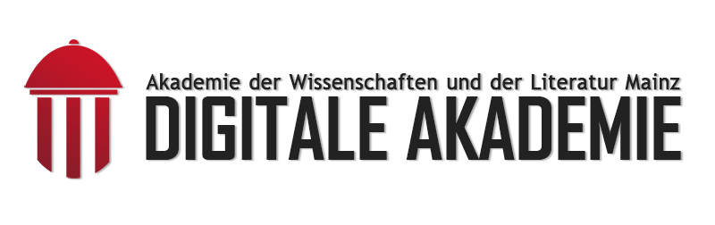

Die Digitale Akademie
Digital Humanities Forschungsteam der Mainzer Akademie

Das Aufgabenspektrum umfasst die Konzeption, Gestaltung und Realisierung geisteswissenschaftlicher Applikationen und virtueller Forschungsumgebungen, die Beratung der Akademie zu allen Aspekten von Digitalisierungsvorhaben sowie die Projektbegleitung bei der Umsetzung digitaler Komponenten zusammen mit Partnern aus Wissenschaft und Wirtschaft.
Gleichzeitig nimmt die Forschung an Kernfragen der Digitalen Geisteswissenschaften sowie die Lehre und Ausbildung des wissenschaftlichen DH-Nachwuchses einen hohen Stellenwert ein.
- DH Forschung und DH Anwendungsorientierung
- Einbeziehung von Methoden aus der freien Wirtschaft und Softwareindustrie
- Team aus Geisteswissenschaftler_innen, Informatiker_innen und Mitarbeiter_innen mit dualer Qualifikation
- Standardisierung, best practices, Nachhaltikgeit
- 24 Teammitglieder (Wissenschaftliche Mitarbeiter_innen, Trainees, studentische Mitarbeiter_innen)
- Akademie ist Gründungsmitglied des Mainzer Zentrums für Digitalität in den Geistes- und Kulturwissenschaften (mainzed)
- Aktiv in der DH-Lehre innerhalb des Masterstudiengangs "Digitale Methodik in den Geistes und Kulturwissenschaften"